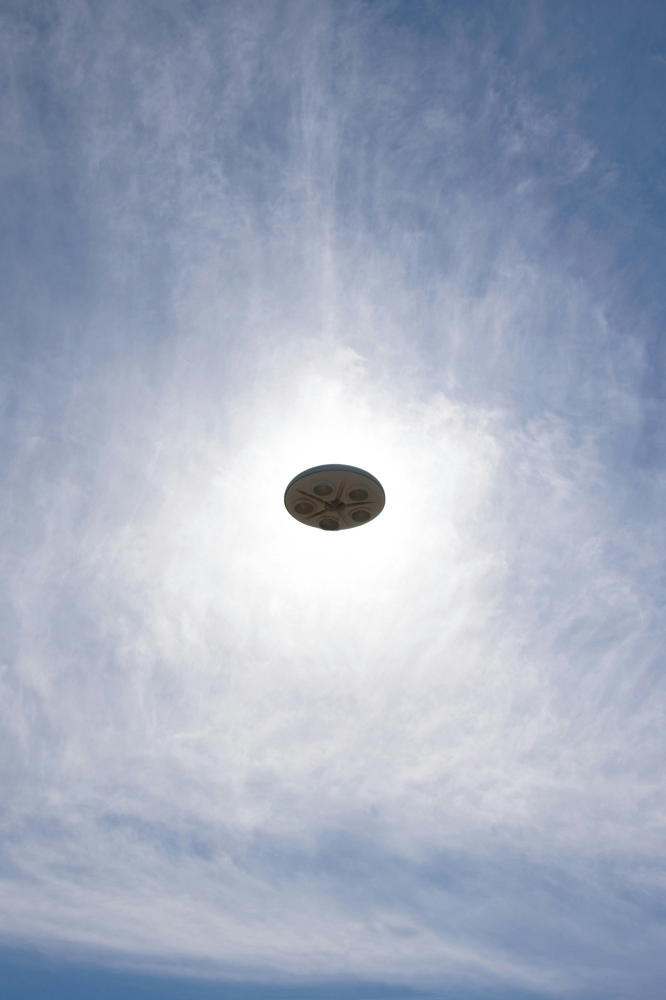

Dalnice

Nasedas do sousedova auta a pronasledujes lupice. Pred dalnici ho dohonis.
Na dalnici se pred vami objevi vesmirna lod, vysune rampu a lupicovo auto
se chysta vjet do letajiciho talire.
-
Dohonis vetrelce, slapnes na plyn a vjedes spolu s nim do vesmirne lodi.
Vjet do lodi
-
Koukas, jak vetrelcovo auto vjizdi do vesmirne lodi a nechas ho jeho
osudu. Nechat auto odletet